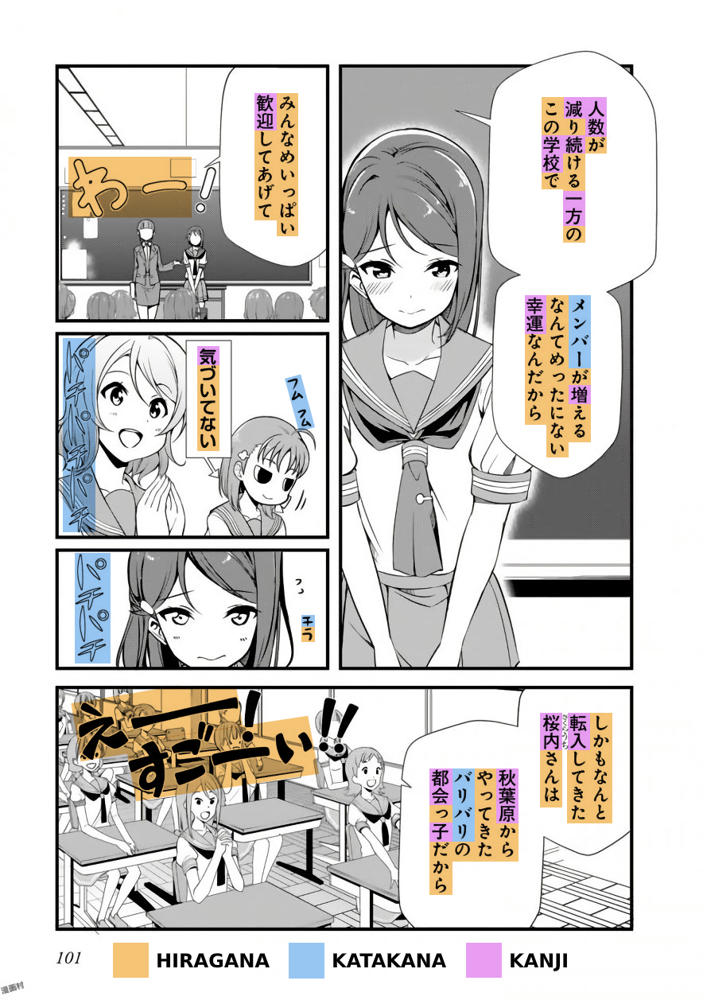

I know that the following guide is long. But language learning is something you do in the long term, so please take the time to read this guide in its entirety. I apologize if this guide may get a little scientific, and I will not write a simplified version of this guide. Everything stated below is what you need to know. Sorry about that.
Before I talk about this, I would like to clarify what I mean by "fail." What I mean is, not being able to achieve their goals. Many people love the idea of being fluent, and being able to watch Japanese media without subtitles, in their raw form. However, many people also don't ever reach this goal or even get close. I believe it mostly isn't their fault, but rather, the method's fault. Whether you're a "visual learner" or an "auditory learner" does not mean anything when it comes to learning a language, you have a big problem if you acquired your first language auditorily, but apparently, you're more of a "visual learner." It mostly comes down to the method used to study Japanese. There are other factors, too, such as motivation, or hours spent each day/consistency. But I believe the process in the first place is critical. For example, if someone told you that you could lose weight by pedaling on an exercise bike while watching TV, and you did this for two hours every day, would you lose weight? No. That is because this is a fundamentally flawed method - it does not work.
This guide aims to educate you on effective methods to study Japanese so that you don't end up like the others that failed and instead succeed, all while having fun in your target language. In this case, your target language is most likely Japanese Back to the "visual learner" and "auditory learner" thing, while it may be right for other fields of study, it is not valid for acquiring a language. We all receive communication in the same way, and that is through comprehensible input. I often come across people saying, "everyone learns differently" This may be true for other fields of study but not for language acquisition. Keyword: Acquisition.
Learning a language properly refers to a conscious process, similar to what one experiences in school. The individual receives "grammar rules" and(or) a "vocabulary list" to remember. When it comes to communicating in the language, they recall these rules and vocab they have learned and try to speak the language. According to Krashen, this is less effective than Acquisition.
The Acquisition of language is a natural, intuitive, and subconscious process that individuals need no awareness. This ability means that this process is fundamentally the same for everyone; hence, natural and acquired pieces of language utilizes intuitively, where the individual, in opposition to learning, does not need time to think and form sentences using learned grammar and vocabulary. And finally, subconscious means that the individual is unaware that the process is happening; the acquisition process may not feel like "language learning." When new knowledge is acquired, the acquirer does not feel like they have learned anything. The acquisition requires meaningful interaction with the target language, during which the acquirer focuses on meaning rather than form. This method means, one is not concerned with the structure of the language they hear and(or) their utterances. They are with the messages they are conveying and understanding."Learning Japanese" may improperly refer to both acquiring and learning. So please keep that in mind.
If i represents previously acquired linguistic competence and extra-linguistic knowledge, the hypothesis claims that we move from i to i+1 by understanding input that contains i+1. Extra-linguistic instruction includes our understanding of the world and the situation, that is, the context. The +1 represents 'the next increment' of new knowledge or language structure within the learner's capacity to acquire. In simpler terms, i+1 means "one [and no more than one] thing [piece of language] you do not yet know in the sentence."
The input itself refers to listening and reading to native content in the target language. Mass data accumulation refers to as immersion. Native content means content made by natives, for natives. (raw) Natives make anime for natives; therefore, it is native content. Comprehensible input refers to input where messages are conveyed and understood. It is the most crucial ingredient in the Acquisition of language. Any data is not sufficient for Acquisition, the data must be understandable. However, as a beginner, it may seem challenging to find comprehensible input, and that is true. I will touch later on how you can benefit from incomprehensible information, too, but not in the same way. You do not acquire language from incomprehensible input but comprehensible input. So please keep that in mind. It is also essential to keep in mind that talking (output) is not practicing a language. When people give anecdotes of how they got better at a speech by speaking a lot, they do not realize that it was the input (from the partner), which improved their language skills. Speaking (output) is just the icing on the cake, and data(input) is where you acquire language.
It may seem natural to take as many people's opinions as possible; after all, they have the experience, right? Maybe you can learn something valuable? Well, not quite. If the person you are taking advice from has not achieved similar goals you're aiming for; you cannot trust their information. If you do, you will get no better than the low level they are now. As a beginner, you have no way to accurately judge someone's language ability, as your linguistic competence is very low or virtually nonexistent. Therefore you are no one to decide if your friend is good at Japanese or not. Why is this important? Because I often come across people who say things like, "But my friend who learns Japanese told me that…" The thought that the friend told the other friend is usually pretty misguided and blatantly false. Has your friend achieved something close to what you want to make? If not, you do not have much luck getting past the low level they are at if you follow their advice. It would be like taking dieting advice from someone fat. " Learning" Japanese Effectively Now that you know the basics of language acquisition, let's dive into how to learn Japanese.
Kana refers to Hiragana and Katakana, and they are the two scripts of the Japanese language. Hiragana and Katakana are two versions of the same sounds in the literature. Hiragana is used for words and names not written in kanji and for analytical purposes. The writer can choose whether or not to use the kanji form. We use Katakana for words borrowed from other languages and foreign names. We also use it for emphasis; however, the usages of hiragana and Katakana are not always consistent, so note that. The kana is not hard to master, and therefore I'd say, learn it however you want. It's better if you have audio with it, too. Mnemonics may seem like a good idea, but I've seen people complain that it makes recalling the kana slower, so I'd say just brute force it. You need to learn this first.I recommend you read Tae Kim (linked in #resources) and pause after The Writing System. After that, copy out the kana chart below and then test yourself.
After a week or so, you should have all the kana nailed down.
Kanji, literally meaning "Chinese Characters" is the third part of the Japanese writing system. They are logographic and, therefore, much more complicated than kana. There are 2136 kanji taught in the Japanese school system; however, don't let this fool you. People use three thousand or more Kanji in daily life. People use Kanji all the time. You will eventually understand what this means when you get a little more advanced in Japanese.
There are two ways to approach Kanji. One is Kanji with vocab, which is to learn words from reading without studying the individual Kanji. You can fully comprehend "守銭奴" without knowing what the individual Kanji means by looking it up in a dictionary. The other is an isolated kanji study, studying the meaning and composition of the individual Kanji. Example: "守" "guard" "銭" "coin" "奴" "guy" = cheapskate. Huh? It's pretty smart. Isolated kanji study can make remembering vocab easier, but it can put you behind due to the amount of time it takes, so it is up to you to decide whether it is worth it. If you struggle with reading words, then you should do an isolated kanji study. ※ Another interesting thing about Kanji with vocab is that if you know other words that also use the Kanji of said word, it can become easier to remember. (Example: If you can comprehend "守護," "銭湯," and "売国奴," then "守銭奴" becomes easier.)
This method is the most straightforward approach to Kanji, and it is the approach I took personally. Look at the image above. Most people will read the kana just by referring to the kana chart, but you can't do the same for Kanji. So how do you learn to read Kanji? Look at the first panel. You see "人数"? That's a word. Look it up in a dictionary such as jisho You get the reading: "にんずう" and the meaning: "number of people." Cool, move on. That's it. But don't expect to remember words just by looking it up once. That is why you should read a lot to build up and retain kanji skills. At the end of the guide, I will go through how to make looking up words smoother.
When approaching Kanji as a beginner, they can look like scribbles rather than familiar shapes, like how a native sees Kanji. Kanji have common shapes and patterns, and Isolated Kanji Study helps you see those common shapes and designs. Instead of "草," looking like a random drawing, you can see that it's composed of "艹," "日," and "十." You can use RRTK (Recognition Remembering the Kanji), a shortened version of the original RTK (Remembering the Kanji). You can find more details about this over at Mass Immersion Approach.
RRTK breaks up the Kanji into "elements," as demonstrated with the kanji "草" earlier. Seeing Kanji as familiar shapes is a primary benefit of RRTK, and memorizing the meanings is a secondary benefit. Knowing the purposes can be pretty handy; however, over time, these meanings fade away and only act as a crutch. To truly "learn" Kanji, you still need to read Japanese for thousands of hours, so in the end, you're going to be doing Kanji with vocab anyway. Think of isolated kanji study as your training wheels for Kanji with vocab.
The bulk of your language learning journey is learning vocabulary to be doing a lot of it. I recommend you start learning vocabulary using Anki after learning the kana and knowing fundamental grammar. How basic it is, it is up to you to decide.
Ankiis a spaced repetition (SRS) flashcard program.I recommend you use Anki to build up a vocabulary of essential words to assist your immersion. After that, learning vocabulary from immersion becomes easier. Usually, people use the Core 2K deck to build up a dictionary of two thousand words; however, I advise against using Core 2K and suggest you do Tango N5+N4 instead. Here's why:
Core 2K is significantly harder than Tango N5+N4 because Tango has the sentence on the front, Core 2K has only the word on the front. Sentences make recalling vocabulary easier; after all, it is much more close to how we use language in real life than isolated words. However, it is essential to note that Tango's translations are not literal and do not represent Japanese structure well, so I guess that's Tango's flaw. In other cases, it might be utterly wrong. People have always struggled with Core 2K, and to make the process smoother, I recommend Tango N5+N4 over Core 2K. Especially if you don't want to do isolated kanji study!
Mining means when you add vocabulary (often along with the sentence they're discovered in) into your Anki deck. You can then review these flashcards overtime to make sure you don't forget them. Mining is something you will be doing for a long time, so this is pretty darn important. There's a lot of disagreement when it comes to "formats" of mining. I think you should just experiment and see what works best for you.
There are two main formats of mining:
i+1 Sentence Cards
High-Quality Vocab Cards (known as Anime Cards)
There has been no settlement to which one is the "best"; they each have their benefits and drawbacks.
I+1 Sentence Cards are cards with an i+1 sentence with all its Kanji on the front and the piece of information needed to understand what it means on the back. Let's go through the benefits and drawbacks.
Benefits:
Drawbacks:
Vocab cards are different from standard vocab cards. Standard vocab cards simply have the word in kanji form on the front and the reading and meaning of that word at the back. High-quality vocab cards, as opposed to standard vocab cards, have the audio of the sentence (from an anime or voiced VN), also a picture (from an anime or VN), and the sentence it came from at the back. Making them much more superior to standard vocab cards. ※ They are known as "Anime Cards" because of the tutorial/site
Benefits:
Drawbacks:
When approaching grammar, it is essential to know that the purpose of a grammar guide is not to make you a master at the language. It is to give you only a basic understanding of how things work in the language, and then a real knowledge of grammar can only be achieved through immersion. Therefore, I recommend you choose a grammar guide, read/watch it, and do immersion.
There are many grammar guides out there, some are good, but some are bad. To prevent confusion amongst learners, I will only mention two grammar guides. Tae Kim and Cure Dolly. No grammar guide is perfect; they each have their ups and downs. Tae Kim's guide reads pretty well and very beginner-friendly; however, some of his explanations may be a little off, which can get annoying to read. Cure Dolly takes an unorthodox approach to Japanese grammar, trying to teach Japanese grammar in a more Japanese "organic" way. However, Cure Dolly is not an absolute beginner-friendly way to start, and you need at least some background knowledge before using it. Also, the audio is poor.
You can find the two grammar guides below:
With that said, I suggest doing grammar study in conjunction with your immersion and vocabulary study.
What you need to do when immersing is different depending on what stage you are on. This reason is why making a one size fits all Japanese guide is tricky. I will only go through what you need to do as a beginner.
When you are a beginner, I recommend doing listening immersion over reading immersion. When you first approach a foreign language, you are not yet used to the phonemes (sounds) of the language. Reading may give you a poor accent, this is when you associate similar, yet wrong phonemes from your native language to Japanese. It is impossible to read without mapping some phonetic components, so you can only avoid this by first getting used to the phonemes. You can do this by doing raw listening. Secondly, listening just flows without stopping, so you feel more comfortable when immersing. On the other hand, reading as a beginner is very frustrating as you need to look up words probably every second continually. Surprisingly, there are many i+1 opportunities in listening immersion as a beginner, so it still passes as comprehensible input, even if you don't understand other parts. But language is not acquired through incomprehensible input, remember? That is true; however, you are still benefiting from incomprehensible information but in a different way; it improves your ability to distinguish phonemes; in other words, giving you a better accent. Immersing even if you don't understand much is also a great way to build up a habit of interacting with your target language. With that said, immersion (input) at this stage will still be mostly incomprehensible; however, you can change that by working through the Tango Anki decks. Please note that you need to pay attention to your immersion. (Active Immersion). Just putting it on in the background (Passive Immersion) is not going to help you.
It's usually best to engage with a visual and audio component, such as anime and j-drama (TV Show). TV shows have a visual element, and also a plot, so this brings more i+1 opportunities. I do not recommend to immerse with say, a podcast or an audiobook as a beginner, as you will have no idea what's going on (incomprehensible input). If you're in this server (Learn Japanese with Anime), then chances are you are a fan of anime, cool. You can use that to immerse, and even anime you have seen in the past. What is also pretty helpful is reading an episode summary of the episode on Wikipedia before watching it, this can help you understand the plot more, so you can make more acquisition gains.
Try to understand the messages. There is a lot you can infer from a TV show. Like Krashen says, you need to have "meaningful" (meaning-focused) interaction with the language, rather than focusing on form (such as grammar). I suggest trying to hear the sounds more clearly, too?
Reading, no matter what stage you are at, can benefit you greatly. However, as a beginner to the language, there are a few problems. You're still learning in the earlier stages of the learning process. Reading as soon as possible can harm your accent. And your reading ability may not always transfer (being able to hear the new words you learned) to your listening ability, especially if your listening ability is considerably low. When you're a beginner, I recommend watching Japanese subtitled anime for reading practice. Japanese subtitles are reading immersion at best, similar to a voiced visual novel. Having the voices in the background isn't going to save your accent nor improve your listening skill, you need to do raw listening. Sorry DJT. Anyway, I think it is good to start with Japanese subtitles for reading. And the transition to manga, and then light novels and so on. I believe it is essential you pace yourself when reading and don't burn out trying to read hard stories as a beginner; it is usually better reading books that are not too far off from your level. In our resources channel, you can find links to sites that let you read a lot of Japanese manga and novels (for free!) There are Japanese subtitles too, so make sure you check that out!
Balance is important. It may be obvious just to split your time up in half, and if you can do that, then that is great. However, not everyone has the time, and when it comes to reading, depending on your current level, it's difficult to read for extended hours. For example, people that have gotten further in the Tango Anki deck may be able to read longer than those who are a little behind. So what is the perfect balance? I cannot answer that, that is up to you to experiment and decide. It all depends on your schedule and current level. You don't need to do reading from day 1, give it a few weeks until you can learn essential words from the Tango N5 Anki deck.
Learn the kana by copying out the entire chart posted in the Kana section into a notebook, or something similar. Use the @Kotoba bot in the #quiz channel to test your knowledge, there is a specific command you need to use, so it doesn't stop until you get them all right (brute-forcing)
The command is as below:
(if you're in the discord) k!quiz-conquest hiragana+katakana no delay After you have passed the @Kotoba quiz, then you should move on to learning vocabulary alongside grammar. It is vital that you pace yourself and don't try to punch above your weight; this is not a race.
Download and set up Anki, you can find the link above or in #resources, then download the Tango N5 deck. You can find the download links for this in #resources in the Anki section. I've updated the link to use a safer file host. (Mediafire → Google Drive) You can import the Tango N5 deck by clicking on it. It should open in Anki, wait a while for it to import. Click the cog icon next to the deck > Options. The default limit of new cards per day set at 20. Try to stick with this number for a few days and see how it goes for you, if you feel like it is too much, you can lower the limit to 15 or even 10. Check in the "Reviews" tab, set the Maximum reviews/day to 9999. Don't be startled by this number. It will likely not go over 150 with an okay retention rate. If you fail to keep up with the reviews, you are getting, lower your new cards/day instead of reducing the maximum reviews. This method is because not doing your due reviews interferes with Anki's spaced repetition system. Anki requires consistency in the long term for it to be effective, try creating a schedule for it. I do my Anki when I wake up in the morning. Work on the Tango N5 Anki deck while reading/watching your chosen grammar guide. After you have finished Tango N5, do Tango N4, too. The download link for it is also in the #resources channel. You should also be nearing the end of your grammar guide at this point. I also suggest starting to read manga at this point. After you finished Tango N4, you should set up a mining deck. It doesn't matter that much which one you pick.
Choose one below.That's it. You can get fluent in Japanese just like that. But don't forget that the most crucial part is immersion, Anki and grammar only assist your immersion. Music is not immersion. However, you can use the lyric sheet as reading practice. This guide would not have been possible if it was not for Stephen Krashen, Mass Immersion Approach, All Japanese All The Time, AntiMoon, Daily Japanese Thread/Itazuraneko, and my brothers and sisters here in Learn Japanese with Anime Discord. Thank you all!
Get Yomichan. It is a browser extension. You can find it in #resources, and the dictionaries you need to load into it too. Download my dictionary pack (#resources), extract it (you can use 7zip). Do not touch the .zip files inside. These need to be kept intact. Click the icon, then click the monkey wrench icon scroll down until you see "Import Dictionary," over here, you need to import the ones with the [Bilingual] tag and (optionally) the [Kanji] tag at the stage you are in your studies. You can only import one dictionary at a time, so wait until one dictionary imports before downloading the next. Now you can look up words on a webpage by just holding Shift and hovering over it. Try it! For manga, I recommend KanjiTomo; it's like Yomichan, but for situations where you can't select the text, e.g., manga. It uses an OCR, so a little less reliable than Yomichan. To apply, hover your mouse over whatever you want to look up. If you have an Android device, you can use Yomichan on Firefox. Or JP-Dictionary (by @Kamui), which adds the iOS "Look Up" feature to your select menu, you can find this in #resources. There is also OCR Manga Reader (get it in #resources), which works like KanjiTomo. Typhon Reader, which operates more like Yomichan. You can load .epub files into it, so it is the best way to read Japanese novels on your phone. Individual EPWING dictionaries can load into Typhon Reader. I find this very useful. You can find EPWING dictionaries in #resources. There's also Kaku; it's a system-wide OCR. Pretty useful too. If you use an iOS device, you can use iBooks, or "Books" as it is in newer versions of iOS. You can use the "Look Up" feature. Make sure you have Japanese dictionaries enabled in Settings - General - Dictionary. If you intend on playing Visual Novels, then make sure you set up text hooking, you can find out how to do that here.
Sorry, but I will not accept donations in the form of money. Ever. Though, You can help me by not acting like a goof in the server. You should not expect to comprehend this guide the first time you read it. Take your time and read it as many times as you can until you finally get it.
As a disclaimer, this website is a work in progress. I made this website as fallback plan for archival purposes. That's pretty much it. Click Here to see the actual page. Enjoy!